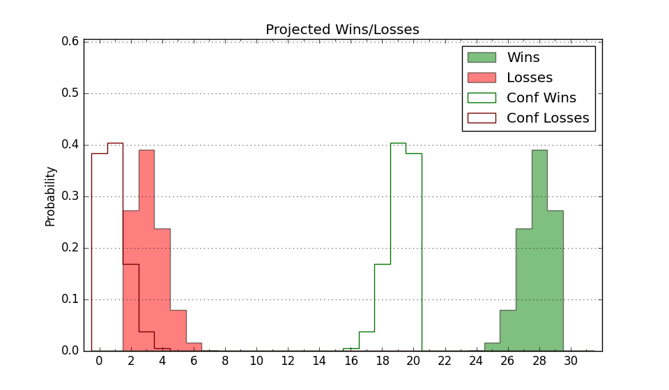

| Home | Game Probabilities | Conferences | Preseason Predictions | Odds Charts | NCAA Tournament |
| City: | Durham, North Carolina | |
| Conference: | ACC (1st)
| |
| Record: | 10-0 (Conf) 18-2 (Overall) | |
| Ratings: | Comp.: 38.7 (3rd) Net: 39.2 (3rd) Off: 124.2 (6th) Def: 85.0 (3rd) SoR: 95.2 (3rd) |
| Remaining | ||||||
|---|---|---|---|---|---|---|
| Date | Opponent | Win Prob | Pred. | |||
| 2/1 | North Carolina (38) | 91.5% | W 84-67 | |||
| 2/5 | @ Syracuse (135) | 95.0% | W 83-63 | |||
| 2/8 | @ Clemson (37) | 75.4% | W 71-64 | |||
| 2/12 | California (106) | 97.9% | W 86-60 | |||
| 2/15 | Stanford (70) | 95.8% | W 82-61 | |||
| 2/17 | @ Virginia (131) | 94.7% | W 69-52 | |||
| 2/22 | (N) Illinois (8) | 69.9% | W 78-72 | |||
| 2/25 | @ Miami FL (198) | 97.0% | W 87-64 | |||
| 3/1 | Florida St. (66) | 95.4% | W 82-61 | |||
| 3/3 | Wake Forest (78) | 96.1% | W 76-55 | |||
| 3/8 | @ North Carolina (38) | 76.1% | W 80-71 | |||
| Previous | Game Score | |||||
| Date | Opponent | Win Prob | Result | Off | Def | Net |
| 11/4 | Maine (200) | 99.1% | W 96-62 | 4.8 | -8.8 | -3.9 |
| 11/8 | Army (303) | 99.7% | W 100-58 | 3.0 | -5.0 | -2.0 |
| 11/12 | (N) Kentucky (14) | 74.8% | L 72-77 | -21.7 | 4.2 | -17.5 |
| 11/16 | Wofford (132) | 98.4% | W 86-35 | 7.1 | 32.6 | 39.7 |
| 11/22 | @Arizona (11) | 58.4% | W 69-55 | -9.2 | 22.5 | 13.2 |
| 11/26 | (N) Kansas (10) | 70.8% | L 72-75 | -2.3 | -8.9 | -11.2 |
| 11/29 | Seattle (155) | 98.7% | W 70-48 | -26.1 | 13.1 | -13.0 |
| 12/4 | Auburn (1) | 54.1% | W 84-78 | 24.0 | -15.2 | 8.8 |
| 12/8 | @Louisville (22) | 67.7% | W 76-65 | 4.8 | 5.9 | 10.7 |
| 12/10 | Incarnate Word (267) | 99.6% | W 72-46 | -18.1 | 5.9 | -12.3 |
| 12/17 | George Mason (79) | 96.2% | W 68-47 | -5.5 | 9.9 | 4.4 |
| 12/21 | @Georgia Tech (125) | 94.5% | W 82-56 | 11.6 | 0.2 | 11.8 |
| 12/31 | Virginia Tech (171) | 98.9% | W 88-65 | 7.9 | -17.9 | -10.1 |
| 1/4 | @SMU (42) | 77.6% | W 89-62 | 23.1 | 4.3 | 27.4 |
| 1/7 | Pittsburgh (28) | 89.2% | W 76-47 | -2.9 | 22.8 | 19.9 |
| 1/11 | Notre Dame (67) | 95.5% | W 86-78 | 16.4 | -25.3 | -8.9 |
| 1/14 | Miami FL (198) | 99.1% | W 89-54 | 5.6 | 4.3 | 9.8 |
| 1/18 | @Boston College (225) | 97.8% | W 88-63 | 3.5 | -10.1 | -6.6 |
| 1/25 | @Wake Forest (78) | 87.9% | W 63-56 | -13.9 | 5.2 | -8.8 |
| 1/27 | North Carolina St. (97) | 97.6% | W 74-64 | -13.2 | -6.8 | -20.0 |
| Stats & Trends | |||||
|---|---|---|---|---|---|
| Current | Day | Week | Month | Season | |
| Composite | 38.7 | -0.8 | -1.4 | +1.6 | +10.4 |
| Comp Rank | 3 | -- | -1 | -- | +5 |
| Net Efficiency | 39.2 | -1.0 | -1.9 | -0.1 | -- |
| Net Rank | 3 | -- | -1 | -- | -- |
| Off Efficiency | 124.2 | -0.6 | -1.5 | +3.2 | -- |
| Off Rank | 6 | -1 | -2 | +10 | -- |
| Def Efficiency | 85.0 | -0.4 | -0.4 | -3.2 | -- |
| Def Rank | 3 | -- | -- | -2 | -- |
| SoS Rank | 37 | -2 | -11 | -7 | -- |
| Exp. Wins | 27.8 | -0.1 | +0.1 | +1.0 | +4.3 |
| Exp. Conf Wins | 19.1 | -0.1 | +0.1 | +1.1 | +4.2 |
| Conf Champ Prob | 86.2 | -9.8 | -10.6 | +1.9 | +50.2 |

| Advanced Stats | ||
|---|---|---|
| Stat | Value | Rank |
| Off Eff FG % | 0.583 | 16 |
| Off Ast Ratio | 0.187 | 15 |
| Off ORB% | 0.377 | 15 |
| Off TO Rate | 0.127 | 44 |
| Off FT Ratio | 0.349 | 135 |
| Def Eff FG % | 0.406 | 3 |
| Def Ast Ratio | 0.124 | 52 |
| Def ORB% | 0.211 | 5 |
| Def TO Rate | 0.162 | 94 |
| Def FT Ratio | 0.249 | 21 |